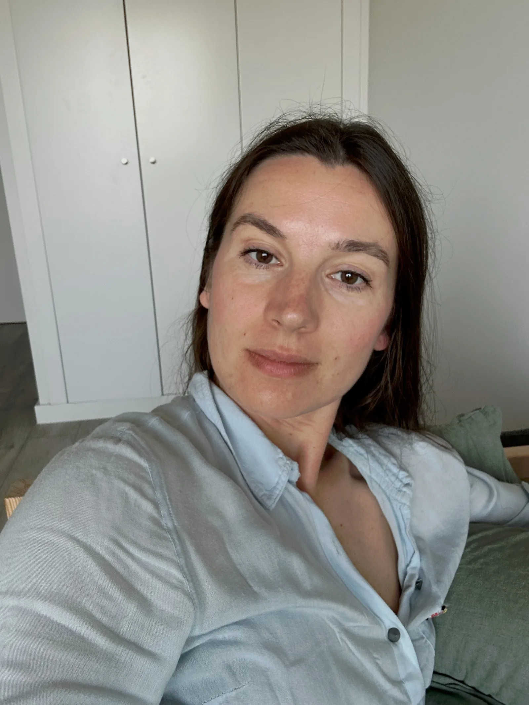

Твоя остання фотосесія для блогу могла вже бути останньою.
Перетвори кілька селфі на цілу бібліотеку реалістичних фотографій для свого контенту.
Створюй нові фото тоді, коли вони потрібні — не тоді, коли знайшлися час і гроші на фотосесію. Я зробила тисячі генерацій і знаю, що працює.
Генеруй професійні портрети за 5 хвилин — за готовими формулами промптів, перевіреними на практиці.

Всі AI-фото згенеровані на основі одного реального селфі — інструментами, які ти освоїш на курсі
Уяви...
Завтра тобі потрібно опублікувати новий пост.
Текст уже готовий. Але фотографії немає.
І тут у більшості людей лише два варіанти:
Після цього курсу з'являється третій варіант:
Цей курс змінює не просто твої навички. Він змінює твоє ставлення до створення контенту. Ось що буде інакше вже через 5 днів.
Уяви...
Тобі потрібна фотографія
Це лише декілька прикладів стилів — насправді підійде будь-яка ніша і будь-який образ, який тобі потрібен.
Всі приклади створені за допомогою інструментів, які ти освоїш на курсі
Через кілька років це здаватиметься так само дивно. Фотосесії для регулярного контенту стануть винятком, а не правилом.
Це не курс для AI-креаторів з купою концепцій, моделей і нюансів, які тобі не потрібні. Це курс для тих, хто хоче гарну стрічку в Instagram — і більше нічого зайвого.
Якщо ти показуєш реальні моменти з життя — фотосесія потрібна. Але якщо просуваєш послуги чи продукт, людям важлива якісна картинка, а не документальна точність.
Ти купуєш цей курс не тому, що хочеш навчитися працювати з AI.
«У мене немає фотографії
для нового поста.»
Не AI. Не промпти. Не генерація.
А свобода створювати контент тоді, коли він потрібен.